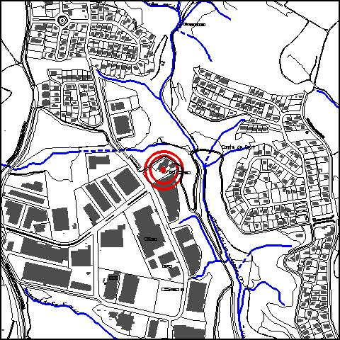
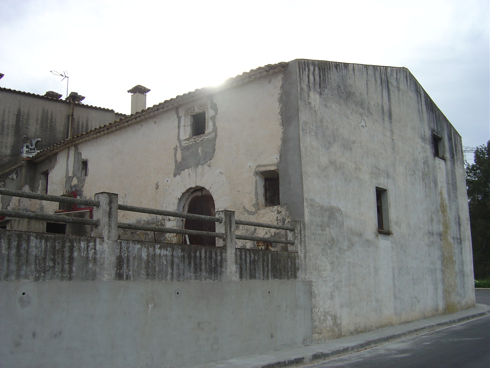

|  |  |
Nom de l’element: Can Campanyà
Clau d’identificació: A.07
Nucli o indret: c/ Indústria (P.I.Compte de Sert).
UTM:X= 415.752, Y= 4.593.135, 121,50m snm.
Règim del sòl: sòl urbà.
1.1. Època de construcció i tipologia:
Masia tradicional del segle XIV. La seva pedra és de la mateixa pedrera que la del Pont del Diable (Pedrera de Can Campanyà). Les parets, de fang i pedra, són de 60 cm i la coberta és a dues aigües i de teula. L’edifici és de planta baixa i pis. Inicialment formava part d’un recinte cercat per un mur perimetral. Els cossos més antics són dos que estan en desús. Els elements més interessants són la porta d’entrada d’arc de mig punt dovellat i la finestra que la corona decorada amb elements de forma heràldica. Al llarg del temps s’ha anat modificant l’estructura dels seus cossos. Antigament hi havia un safareig on les dones hi anaven a rentar a mà. L’antic celler és utilitzat actualment com a restaurant. La masia presenta la llegenda que posseïa el “Camp del Matafam”, doncs al finalitzar la Guerra de la Independència hi ha haver un any molt dolent de collites (1817) i en aquest camp es sembraven faves, de manera que els veïns hi anaven a collir-ne d’amagat.
1.2. Estat de conservació:
En general, el seu estat de conservació és mitjà. Les obertures estan en bon estat; les estructures portants, la coberta, les façanes i els acabats interiors presenten un estat mitjà de conservació; les bigues de fusta dels forjats i el paviment presenten un estat deteriorat. La masia presenta humitats.
1.3. Ús actual:
Habitatge i restauració.
1.4. Accés:
Accés fàcil des del c/ Indústria (Pol. Ind. Compte de Sert).
Masia tradicional del segle XIV, feta amb la pedra de la pedrera de Can Campanyà.
3.1. Usos admesos:
Unihabitatge, residencial, hoteler (excepte aparthotel; i amb un màxim de 30 places), oficines i serveis, educatiu, recreatiu cultural i social, recreatiu de restauració, esportiu.
3.2. Condicions d’ordenació:
Disposa de Pla Especial de protecció del patrimoni.
3.3. Accés i serveis:
Accés des del c/ Indústria (Pol. Ind. Compte de Sert).
BCIL (Bé Cultural d’Interes Local)